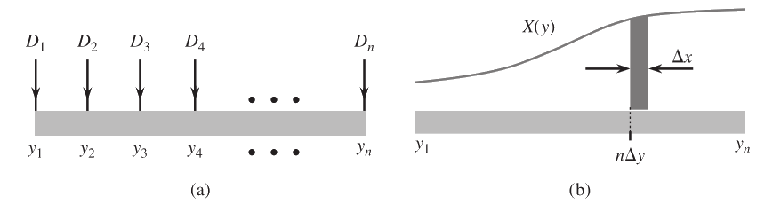
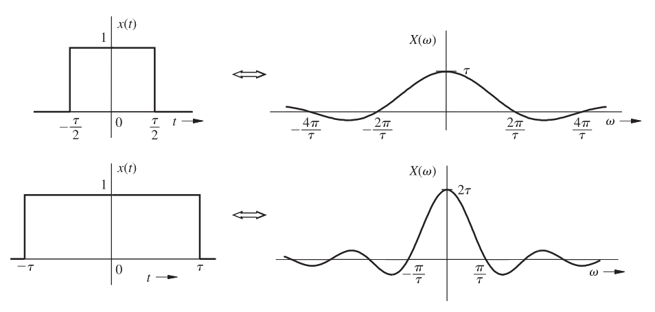
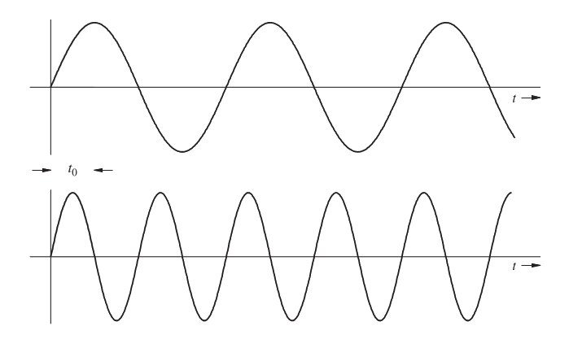
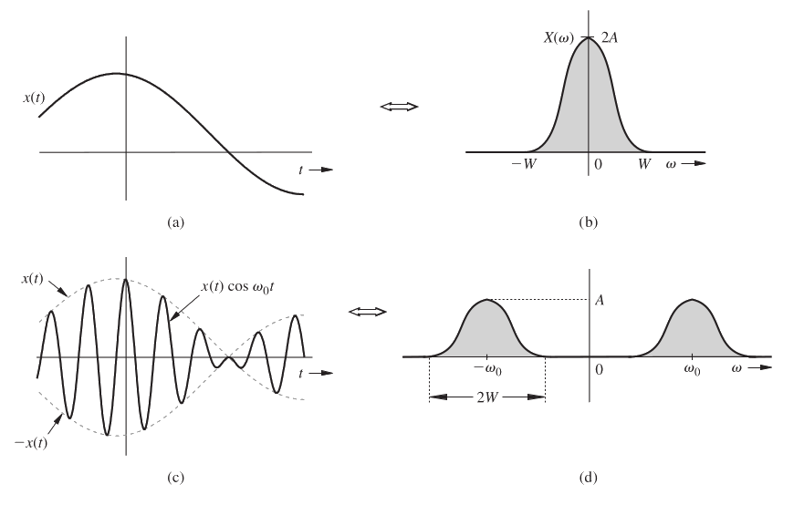

Introdução7.1
Até este ponto da disciplina, estudamos sinais e sistemas principalmente no domínio do tempo e, mais recentemente, no domínio complexo por meio da Transformada de Laplace. Agora, daremos um passo natural: estudar como um sinal pode ser descrito em termos de suas componentes espectrais.
A Transformada de Fourier contínua será apresentada aqui como uma continuação do que já discutimos em série de Fourier e em Laplace. Entretanto, do ponto de vista prático, a abordagem desta aula será deliberadamente operacional: após compreender a definição e algumas derivações fundamentais, passaremos a resolver a maior parte dos exemplos por tabela e por propriedades.
Ao longo desta aula e da próxima, utilizaremos como referência o apêndice Tabela da Transformada de Fourier.
A Transformada de Fourier7.2
Para um sinal $x(t)$, definimos sua transformada de Fourier por
$$ X(\omega) = \int_{-\infty}^{\infty} x(t)e^{-j\omega t}\,dt $$
e a transformada inversa por
$$ x(t) = \frac{1}{2\pi}\int_{-\infty}^{\infty} X(\omega)e^{j\omega t}\,d\omega $$
Escrevemos esse par de forma compacta como
$$ x(t) \iff X(\omega) $$
O papel de $X(\omega)$ é dizer quanto de cada frequência angular $\omega$ está presente no sinal $x(t)$.
Espectro de amplitude e fase7.2.1
Como $X(\omega)$ em geral é complexo, podemos escrevê-lo como
$$ X(\omega) = \lvert X(\omega) \rvert e^{j\angle X(\omega)} $$
Desse modo, analisamos separadamente:
- o espectro de amplitude $\lvert X(\omega) \rvert$;
- o espectro de fase $\angle X(\omega)$.
Essa separação será muito importante em comunicações, quando quisermos entender o que acontece com a posição do espectro e com a fase após atrasos, modulação e filtragem.
Da série de Fourier para a integral de Fourier7.2.2
Na série de Fourier, um sinal periódico é representado por uma soma de exponenciais complexas em frequências discretas. Quando o período cresce indefinidamente, o espaçamento entre essas frequências tende a zero e a soma se transforma em uma integral. É justamente desse limite que nasce a transformada de Fourier de sinais não periódicos.
Em outras palavras:
- a série de Fourier trabalha com espectro discreto;
- a transformada de Fourier trabalha com espectro contínuo.
Em um espectro contínuo, não faz sentido pensar em “amplitude finita de uma única linha” como no caso periódico. O que passa a importar é a densidade espectral em torno de cada frequência.

Existência da Transformada7.3
Nem todo sinal possui transformada de Fourier no sentido usual da integral acima. Um critério suficiente bastante útil é que o sinal seja absolutamente integrável, isto é,
$$ \int_{-\infty}^{\infty} \lvert x(t) \rvert\,dt < \infty $$
Esse critério não é o mais geral possível, mas é suficiente para a maior parte dos sinais físicos que queremos analisar inicialmente.
Na prática, vale a pena separar duas ideias:
- um critério suficiente para garantir a existência da transformada pela integral direta;
- uma classe mais ampla de sinais que ainda pode ser tratada por extensões da teoria, mesmo quando a integral direta não converge da forma mais ingênua.
Isso explica por que alguns sinais muito importantes em engenharia, como o degrau unitário, exigem mais cuidado conceitual. Eles não se comportam tão bem quanto um pulso de energia finita, mas continuam sendo relevantes demais para serem ignorados.
Nesta aula, não faremos uma discussão formal longa sobre convergência. Em vez disso, vamos nos concentrar em dois pontos pedagógicos:
- compreender o significado da definição;
- migrar rapidamente para o uso prático da tabela e das propriedades.
Conexão entre Fourier e Laplace7.4
Na aula anterior, vimos que a transformada de Laplace bilateral é
$$ X(s) = \int_{-\infty}^{\infty} x(t)e^{-st}\,dt $$
Se fizermos $s=j\omega$, obtemos formalmente
$$ X(j\omega)=\int_{-\infty}^{\infty} x(t)e^{-j\omega t}\,dt $$
que tem exatamente a forma da transformada de Fourier.
Isso sugere a ideia:
$$ \text{Fourier} \subset \text{Laplace} $$
Essa ideia é útil, mas deve ser usada com cuidado.
A substituição $s=j\omega$ só produz a transformada de Fourier quando o eixo imaginário pertence à região de convergência da transformada de Laplace.
Portanto, não é correto afirmar que basta sempre substituir $s$ por $j\omega$.
Esse detalhe é uma excelente ponte com o que acabamos de estudar: Laplace é mais geral, enquanto Fourier foca especificamente na decomposição espectral ao longo do eixo de frequências puras.
Vale a pena guardar a leitura operacional dessa relação:
- a transformada de Laplace permite trabalhar com um conjunto mais amplo de sinais, inclusive sinais exponencialmente crescentes em regiões adequadas do plano-$s$;
- a transformada de Fourier é mais restrita, mas fornece uma leitura espectral muito mais direta;
- sempre que a RDC incluir o eixo imaginário, a passagem de Laplace para Fourier é natural;
- quando isso não acontece, a conexão ainda existe conceitualmente, mas não pode ser usada como simples substituição algébrica.
Em particular:
- para $e^{-at}u(t)$ com $a>0$, a substituição $s=j\omega$ funciona bem;
- para sinais como $u(t)$, a situação é mais sutil, e a transformada de Fourier precisa ser entendida com cuidado adicional.
Vamos determinar a transformada de Fourier de
$$ x(t)=e^{-at}u(t), \quad a>0 $$
usando diretamente a definição.
1. Montagem da integral
Como $u(t)=0$ para $t<0$, temos
$$ X(\omega)=\int_0^{\infty} e^{-at}e^{-j\omega t}\,dt $$
$$ X(\omega)=\int_0^{\infty} e^{-(a+j\omega)t}\,dt $$
2. Integração
$$ X(\omega)=\left[-\frac{1}{a+j\omega}e^{-(a+j\omega)t}\right]_0^{\infty} $$
Como $a>0$, o termo exponencial tende a zero quando $t\to\infty$. Logo,
$$ X(\omega)=\frac{1}{a+j\omega} $$
3. Resultado final
$$ \boxed{e^{-at}u(t) \iff \frac{1}{a+j\omega}, \quad a>0} $$
Este será um dos pares mais importantes de toda a tabela.
Vamos determinar a transformada de Fourier de $\delta(t)$ pela definição.
Usando a propriedade de amostragem,
$$ X(\omega)=\int_{-\infty}^{\infty}\delta(t)e^{-j\omega t}\,dt=e^{-j\omega\cdot 0}=1 $$
Portanto,
$$ \boxed{\delta(t) \iff 1} $$
Esse resultado é simples, mas conceitualmente muito importante: um impulso no tempo possui espectro constante em todas as frequências.
A partir daqui: tabela e propriedades7.5
Agora que justificamos a definição com dois exemplos fundamentais, adotaremos a estratégia prática da engenharia: trabalhar principalmente com a tabela de Fourier e com as propriedades operacionais.
Antes de pensar em integrar, tente responder às perguntas abaixo:
- O sinal já está na tabela?
- Ele é uma soma de sinais da tabela?
- Há deslocamento, escalamento ou modulação?
- Posso usar dualidade?
Tabela de referência7.5.1
A tabela completa está no apêndice Tabela da Transformada de Fourier. A seguir, destacamos os pares e propriedades que usaremos imediatamente.
Alguns pares usados nesta aula7.5.1.1
| Regra | $x(t)$ | $X(\omega)$ |
|---|---|---|
| 1 | $\delta(t)$ | $1$ |
| 2 | $1$ | $2\pi\delta(\omega)$ |
| 5a | $\cos(\omega_0 t)$ | $\pi[\delta(\omega-\omega_0)+\delta(\omega+\omega_0)]$ |
| 6 | $e^{-at}u(t)$ | $\dfrac{1}{a+j\omega}$ |
| 8 | $e^{-a\lvert t \rvert}$ | $\dfrac{2a}{a^2+\omega^2}$ |
| 9 | $\operatorname{ret}(t/\tau)$ | $\tau\operatorname{sinc}(\omega\tau/2)$ |
| 10 | $\Delta(t/\tau)$ | $\dfrac{\tau}{2}\operatorname{sinc}^2(\omega\tau/4)$ |
Algumas propriedades usadas nesta aula7.5.1.2
| Propriedade | Operação no tempo | Resultado na frequência |
|---|---|---|
| P1 | $a_1x_1(t)+a_2x_2(t)$ | $a_1X_1(\omega)+a_2X_2(\omega)$ |
| P3 | $x(at)$ | $\dfrac{1}{\lvert a\rvert}X(\omega/a)$ |
| P4 | $x(t-t_0)$ | $e^{-j\omega t_0}X(\omega)$ |
| P5 | $e^{j\omega_0 t}x(t)$ | $X(\omega-\omega_0)$ |
| P7 | $x(t)\cos(\omega_0 t)$ | $\dfrac{1}{2}[X(\omega-\omega_0)+X(\omega+\omega_0)]$ |
| P13 | dualidade | $X(t) \iff 2\pi x(-\omega)$ |
A tabela não deve ser usada como coleção de respostas prontas para decorar mecanicamente. O uso correto consiste em reconhecer um sinal básico e, a partir dele, aplicar as propriedades até transformar o problema no formato de alguma regra conhecida.
Propriedades fundamentais7.6
Linearidade7.6.1
Se
$$ x_1(t) \iff X_1(\omega) \quad \text{e} \quad x_2(t) \iff X_2(\omega) $$
então
$$ a_1x_1(t)+a_2x_2(t) \iff a_1X_1(\omega)+a_2X_2(\omega) $$
Esta será a propriedade mais usada na passagem de senos e cossenos para impulsos em frequência.
Dualidade7.6.2
Se
$$ x(t) \iff X(\omega) $$
então
$$ X(t) \iff 2\pi x(-\omega) $$
Ela é poderosa porque permite gerar novos pares a partir de pares já conhecidos, sem recalcular integrais.
A dualidade existe porque as fórmulas de transformação direta e inversa são quase simétricas: em certo sentido, tempo e frequência trocam de papel, restando apenas o ajuste do fator $2\pi$ e da inversão de sinal. Por isso, sempre que encontramos um par útil, devemos nos perguntar imediatamente se seu dual também pode ser explorado.
Escalamento7.6.3
Se $x(t) \iff X(\omega)$, então
$$ x(at) \iff \frac{1}{\lvert a\rvert}X(\omega/a) $$
Essa propriedade formaliza um fato físico importante:
- quando o sinal é comprimido no tempo, o espectro se expande;
- quando o sinal é alargado no tempo, o espectro se comprime.

Deslocamento no tempo7.6.4
Se $x(t) \iff X(\omega)$, então
$$ x(t-t_0) \iff e^{-j\omega t_0}X(\omega) $$
Observe a leitura física:
- o espectro de amplitude não muda;
- a fase ganha um termo linear em $\omega$.
Esse ponto merece atenção especial. Um atraso de tempo igual para todo o sinal não pode privilegiar uma frequência em relação a outra no módulo do espectro. O que muda é o alinhamento temporal de cada componente senoidal usada na síntese do sinal. Como uma senoide de frequência mais alta oscila mais rapidamente, ela precisa sofrer um deslocamento de fase proporcionalmente maior para produzir o mesmo atraso temporal. É exatamente por isso que surge o termo linear $-\omega t_0$.

Deslocamento na frequência7.6.5
Se $x(t) \iff X(\omega)$, então
$$ e^{j\omega_0 t}x(t) \iff X(\omega-\omega_0) $$
Esse resultado é a base matemática da modulação em amplitude.
Em linguagem física, multiplicar por uma exponencial complexa não altera a forma básica do espectro: apenas o translada ao longo do eixo de frequências. Quando usamos cosseno em vez de exponencial complexa, obtemos duas translações simultâneas, uma para a direita e outra para a esquerda. Essa observação será a base de toda a próxima aula.
Modulação por cosseno7.6.6
Como
$$ \cos(\omega_0 t)=\frac{1}{2}(e^{j\omega_0 t}+e^{-j\omega_0 t}) $$
segue que
$$ x(t)\cos(\omega_0 t) \iff \frac{1}{2}[X(\omega-\omega_0)+X(\omega+\omega_0)] $$
Em outras palavras, multiplicar por cosseno desloca o espectro para a direita e para a esquerda.

Determine a transformada de Fourier de
$$ x(t)=\cos(\omega_0 t) $$
usando a tabela.
Pela identidade de Euler,
$$ \cos(\omega_0 t)=\frac{1}{2}e^{j\omega_0 t}+\frac{1}{2}e^{-j\omega_0 t} $$
Aplicando a linearidade e as Regras 3 e 4 da tabela do apêndice,
$$ X(\omega)=\frac{1}{2}\cdot 2\pi\delta(\omega-\omega_0)+\frac{1}{2}\cdot 2\pi\delta(\omega+\omega_0) $$
Logo,
$$ \boxed{\cos(\omega_0 t) \iff \pi[\delta(\omega-\omega_0)+\delta(\omega+\omega_0)]} $$
Perceba que este exemplo foi resolvido sem retornar à integral de definição.
Determine a transformada de Fourier de
$$ x(t)=e^{-a\lvert t \rvert}, \quad a>0 $$
usando decomposição em sinais básicos da tabela.
1. Reescrita do sinal
Podemos escrever
$$ e^{-a\lvert t \rvert}=e^{-at}u(t)+e^{at}u(-t) $$
Essa decomposição é natural: para $t\ge 0$, o sinal vale $e^{-at}$, enquanto para $t<0$ ele vale $e^{at}$.
2. Aplicação da tabela
Pelas Regras 6 e 7 do apêndice,
$$ e^{-at}u(t) \iff \frac{1}{a+j\omega} $$
e
$$ e^{at}u(-t) \iff \frac{1}{a-j\omega} $$
Logo, pela linearidade,
$$ X(\omega)=\frac{1}{a+j\omega}+\frac{1}{a-j\omega} $$
3. Simplificação algébrica
Somando as frações,
$$ X(\omega)=\frac{(a-j\omega)+(a+j\omega)}{(a+j\omega)(a-j\omega)} $$
$$ X(\omega)=\frac{2a}{a^2+\omega^2} $$
4. Resultado final
$$ \boxed{e^{-a\lvert t \rvert} \iff \frac{2a}{a^2+\omega^2}} $$
Observe o valor pedagógico deste exemplo: o par final até aparece na tabela, mas a resolução foi feita por manipulação de dois pares mais básicos. Esse é exatamente o tipo de raciocínio que iremos treinar.
Além disso, a simetria do sinal já antecipa o tipo de espectro: como $x(t)$ é real e par, o espectro também deve ser real e par.
Determine a transformada de Fourier do sinal modulado
$$ y(t)=\operatorname{ret}(t/4)\cos(10t) $$
1. Transformada do sinal-base
Pela Regra 9,
$$ \operatorname{ret}(t/4) \iff 4\operatorname{sinc}(2\omega) $$
Portanto, se chamarmos a transformada do pulso de $X(\omega)$, então
$$ X(\omega)=4\operatorname{sinc}(2\omega) $$
2. Aplicação da modulação por cosseno
Pela Propriedade P7,
$$ Y(\omega)=\frac{1}{2}[X(\omega-10)+X(\omega+10)] $$
Substituindo $X(\omega)$,
$$ Y(\omega)=\frac{1}{2}\left[4\operatorname{sinc}(2(\omega-10))+4\operatorname{sinc}(2(\omega+10))\right] $$
$$ Y(\omega)=2\operatorname{sinc}(2\omega-20)+2\operatorname{sinc}(2\omega+20) $$
3. Interpretação espectral
O que fizemos foi pegar o espectro passa-baixas do pulso retangular e criar duas cópias dele:
- uma centrada em $+10$ rad/s;
- outra centrada em $-10$ rad/s;
- ambas com amplitude multiplicada por $1/2$ em relação ao deslocamento puro.
Portanto,
$$ \boxed{Y(\omega)=2\operatorname{sinc}(2\omega-20)+2\operatorname{sinc}(2\omega+20)} $$
Esse é exatamente o mecanismo que será reutilizado em modulação DSB-SC na próxima aula.